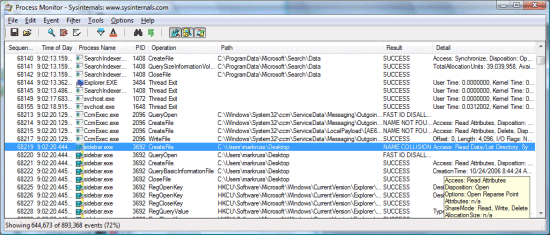
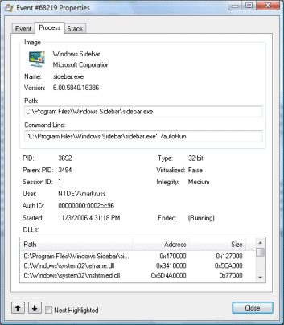

Авторы: Марк Руссинович (Mark Russinovich) и Брайс Когсуэлл (Bryce Cogswell)
Опубликовано 17 января 2011 г.
Введение
Программа Process Monitor является усовершенствованным инструментом отслеживания для Windows, который в режиме реального времени отображает активность файловой системы, реестра, а также процессов и потоков. В этой программе сочетаются возможности двух ранее выпущенных программ от Sysinternals: Filemon и Regmon, а также огромный ряд улучшений, включая расширенную и безвредную фильтрацию, всеобъемлющие свойства событий, такие как ID сессий и имена пользователей, достоверную информацию о процессах, полноценный стек потока со встроенной поддержкой всех операций, одновременную запись информации в файл и многие другие возможности. Эти уникальные возможности делают программу Process Monitor ключевым инструментом для устранения неполадок и избавления от вредоносных программ.
Программа Process Monitor работает в ОС Windows 2000 с пакетом обновлений 4 (SP4) с накопительным пакетом обновлений 1, Windows XP с пакетом обновлений 2 (SP2), Windows Server 2003 с пакетом обновлений 1 (SP1) и Windows Vista, а также x64-версии ОС Windows XP, Windows Server 2003 с пакетом обновлений 1 (SP1) и Windows Vista.
 К началу страницы
К началу страницы
Преимущества программы Process Monitor над программами
Filemon и Regmon
Пользовательский интерфейс программы Process Monitor и параметры схожи с интерфейсом и параметрами программ Filemon и Regmon, но в программе Process Monitor есть ряд существенных улучшений, таких как:
- отслеживание запуска и завершения работы процессов и потоков, включая информацию о коде завершения;
- отслеживание загрузки образов (библиотек DLL и драйверов устройств, работающих в режиме ядра);
- больше собираемых данных об параметрах операций ввода и вывода;
- безвредные фильтры позволяют устанавливать фильтры, которые не будут приводить к потере данных;
- сбор стеков потоков для каждой операции позволяет в большинстве случаев определить исходную причину выполнения операции;
- достоверный сбор информации о процессах, включая путь к образу процесса, командную строку, а также ID пользователя и сессии;
- настраиваемые и перемещаемые колонки для каждого свойства события;
- фильтры можно установить на любое поле с данными, включая поля, которые не являются колонками;
- усовершенствованная архитектура записи журналов расширяет возможности программы до десятков миллионов зарегистрированных событий и гигабайтов записанных данных о событиях;
- дерево процессов отображает отношения между всеми процессами, перечисленными в сведениях трассировки;
- основной формат журнала сохраняет все данные, чтобы их можно было загрузить в другом экземпляре программы Process Monitor;
- подсказки к процессам для простого просмотра информации об образе процесса;
- детальные подсказки позволяют получить удобный доступ к форматированным данным, которые не помещаются в колонке;
- прекращаемый поиск;
- запись в журнал всех операций во время загрузки системы.
Проще всего ознакомиться с возможностями программы Process Monitor, прочитав файл справки и попробовав воспользоваться каждым пунктом меню и настройкой программы на рабочей системе.
К началу страницы
Снимки экрана


К началу страницы
Установка
Просто запустите программу Process Monitor (procmon.exe).
В файле справки программы Process Monitor приводится информация о доступных операциях и об использовании программы. При возникновении вопросов или проблем посетите форум на веб-узле Sysinternals, посвященный программе Process Monitor .
К началу страницы
Дополнительные материалы
Ниже приведена другая информация и программы от Sysinternals и для отслеживания процессов и системы:
- FileMon — отслеживание обращений к файловой системе;
- RegMon — отслеживание обращений к реестру;
- PortMon — отслеживание обращений к последовательным и параллельным портам;
- Process Monitor — отслеживание работы процессов и потоков;
- DiskMon — отслеживание работы жестких дисков;
- DebugView — отслеживание вывода отладочной информации.
К началу страницы